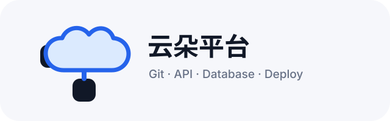
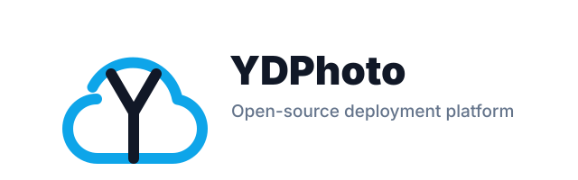

方案 A：Cloud Launch
蓝色云朵加向上箭头，表达上传、发布和部署。适合 SaaS 官网主标识。
围绕“云朵、部署、控制台、一键发布、开源平台”做了 5 个方向。SVG 文件都在当前目录，可直接使用或继续精修。
蓝色云朵加向上箭头，表达上传、发布和部署。适合 SaaS 官网主标识。
深色控制台风格，强调开发者工具属性。适合控制台、CLI、开源社区。
云朵内嵌播放按钮，突出“一键启动、一键上线”。识别直接，营销感更强。

云端连接 Git、API、数据库和部署节点，适合强调平台能力矩阵。

把 YD 字母和云朵轮廓结合，更像长期品牌符号，适合 App icon 和 favicon 延展。